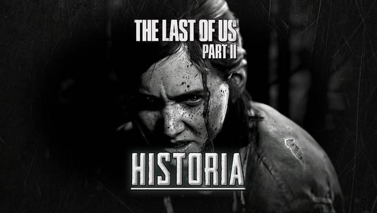
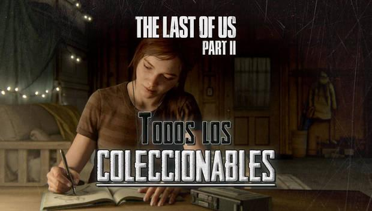

The Last of Us Parte 2: Guía del 100%, trucos y secretoss
INICIO DE LA GUÍA
Bienvenidos a nuestra guía oficial de The Last of Us 2. Aquí te contaremos todo lo necesario para completar el juego al 100% con una guía completa sin spoilers, con consejos para avanzar y completar todos los capítulos, encontrar todos los coleccionables y secretos, toda la información sobre las armas, los enemigos y más, mucho más.
Todos los capítulos y Walkthrough de la historia

En nuestra guía completa y sin spoilers del juego, te llevaremos de la mano de principio a fin del juego. Si sigues la guía, recogerás el 100% de armas, objetos y coleccionables. También hay indicaciones sobre trofeos en los momentos adecuados.
Estos son todos los capítulos de The Last of Us - Parte II, y cómo completar cada uno de ellos:
Jackson: el viaje comienza en el lugar donde terminó nuestra aventura original
Seattle, día 1: Ellie parte con un objetivo muy claro, pero pocas pistas.
Seattle, día 2: una revelación supone un pequeño problema para alcanzar nuestro destino.
Seattle, día 3: con suficientes pistas, es posible que podamos cumplir con nuestra misión.
El parque: un pequeño desvío nos permite conocer a alguien.
Seattle, día 1 (bis): las cosas no siempre son lo que parecen.
Seattle, día 2 (bis): poco a poco, entendemos más del mundo que nos rodea.
Seattle, día 3 (bis): una serie de acontecimientos nos llevarán hasta un esperado desenlace.
La granja: incluso en este mundo, hay ciertos momentos de paz.
Santa Bárbara: aún queda algo por hacer si queremos dar carpetazo a la situación.
La granja (Epílogo): ¿terminará bien la historia? Solamente hay una forma de averiguarlo.
Todos los coleccionables - Dónde y cómo encontrarlos

The Last of Us - Parte II cuenta con más de 280 objetos coleccionables para conseguir a lo largo de todos sus capítulos. En la guía de historia se indica la posición de cada uno de ellos mientras avanzas, si prefieres avanzar sin dejarte nada. En caso contrario, aquí tenemos un listado completo para que busques exactamente lo que te falta.
Estos son todos los tipos de coleccionables de The Last of Us - Parte II, y un listado de absolutamente todos ellos:
Artefactos: documentos, notas, cartas y objetos peculiares.
Cartas coleccionables: una baraja especial compuesta de personajes de cómics.
Entradas de diario: toda la colección de de anotaciones del diario de Ellie.
Mesas de trabajo: te mostramos la ubicación de todos los lugares donde podrás mejorar tus armas.
Monedas: unas pequeñas moneditas de distintos estados.
Cajas fuertes: cajas de seguridad donde darás con recursos y otros objetos valiosos.
Manuales de entrenamiento: todos los libros que necesitas para desbloquear nuevas ramas de habilidades.